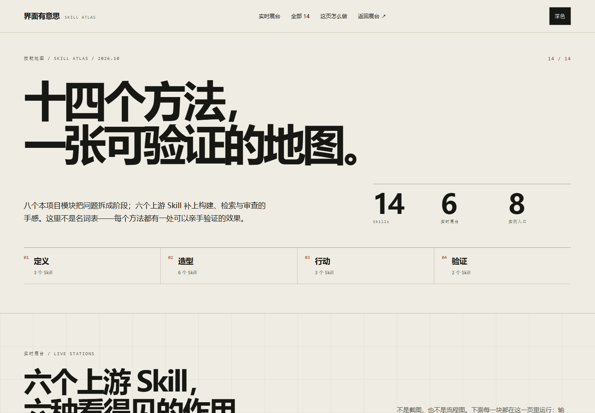

让界面
值得体验。
揭开这枚贴纸，给好奇心腾个位置。
有想法 · 有样子 · 有回应
不同界面，
不同的好用方式。
官网让人读懂，工作台让人行动，
手机体验让每一步都顺手。
十五个方法，
一张可检查的地图。
九个本地模块（含提示词手册），六个上游 Skill。
不是名词表：每个方法都在页内留下可操作的证据。

打开 Skill Atlas ↗SKILL ATLAS / 15 SKILLS / 6 LIVE STATIONS
不是读完，
是当场试一遍。
- 01–06六个上游展台：术语翻译、register 切换、资料检索、方向抽样、产品层级、审查修复。
- 07–15八个本地模块与提示词手册：在官网、工作台、手机原型与组件实验室里接力。
输入「按钮被黑杠挡住了」看术语如何落成安全区；切换 brand / product / H5 看同一任务改口；运行审查，再逐条修复。每个展台都能亲手操作。
别只看，
亲手感受一下。
这里就是现场。点击、输入、切换，
从操作中发现设计的理由。
用展览介绍、策展叙事与到访信息，构成一条清楚的阅读路线。
内容型官网 · 原创插画这些是本地交互原型。项目编辑与表单反馈用于演示，不连接后端；手机原型按手持界面呈现。
好体验，
从好问题开始。
九个本地模块，加上六个上游 Skill。
它们接力，把判断变成可验证的界面。
意图
谁会使用？他现在最想做什么？
先把任务和信息的轻重排好，再谈布局。
形态
把「想要好看」拆成具体选择。
让字体、颜色与组件，说同一种语言。
交互
动作有起点，也要有归处。
能被打断，能用键盘，也能安静地完成。
六个上游展台在 技能地图 里，可输入、检索、抽取和审查。
好奇心已经有了，
下一步，交给你的手。